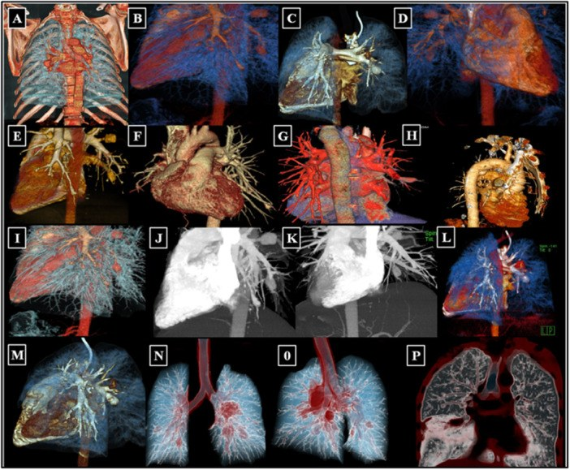
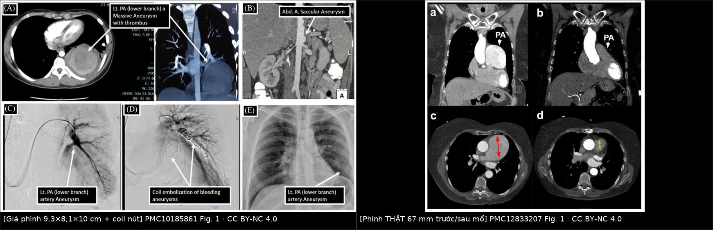
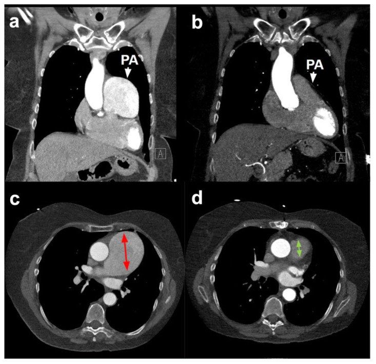
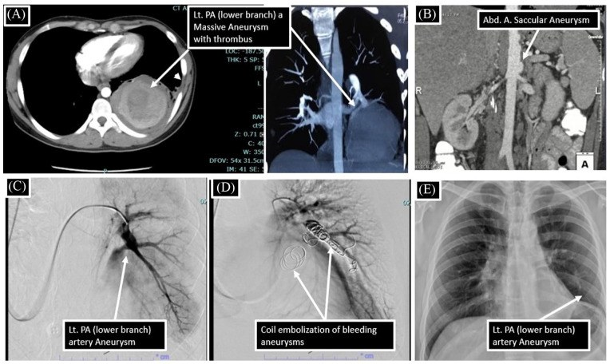
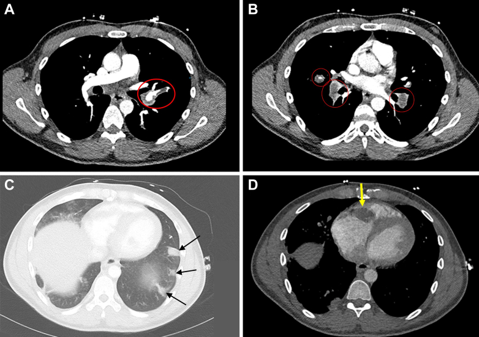

096 — Phình động mạch phổi THẬT & hội chứng Hughes–Stovin: ngưỡng can thiệp, bẫy huyết khối tại chỗ / True pulmonary artery aneurysm & Hughes–Stovin syndrome
Tags: pattern:phinh-mach pattern:ho-ra-mau pattern:huyet-khoi vung:phoi vung:trung-that protocol:CTPA protocol:MIP-tai-dung protocol:DSA-nut-mach-phoi
Mức chắc chắn (certainty): tổng hợp y văn (literature synthesis) — tổng quan Hughes–Stovin của Imran MM et al., Health Sci Rep 2025 (PMC12606038), loạt 3 ca H–S của Sachdev G et al., J Clin Imaging Sci 2023 (PMC10185861), loạt Behçet có phình ĐM phổi của Yigit N et al., Ther Adv Respir Dis 2026 (PMC13365664), 2 ca phình thật đơn độc của Cassidy-Nolan D et al., J Investig Med High Impact Case Rep 2026 (PMC12833207), ca Behçet–H–S có khối ở van ba lá của Naseer Z et al., JACC Case Rep 2026 (PMC13332666). Số chưa kiểm chứng ghi "chưa rõ", không bịa.
1. Tổng quan bệnh học – cơ chế hình ảnh
- Phình THẬT vs phình GIẢ — câu hỏi đầu tiên, vì tiên lượng khác nhau: phình thật (true aneurysm) là giãn khu trú còn đủ 3 lớp thành mạch (nội mạc–trung mạc–ngoại mạc), thường do thoái hóa trung mạc, viêm mạch, tăng áp phổi hoặc bệnh mô liên kết. Phình giả (pseudoaneurysm) chỉ còn lớp áo ngoài/mô quanh mạch giữ máu — do chấn thương, can thiệp (Swan–Ganz, catheter), nhiễm trùng, hoại tử. Về mặt hình ảnh, cả hai đều là "túi cản quang", nhưng phình giả có cổ hẹp, thành không đều, dễ vỡ hơn ở cùng đường kính.
- TẠI SAO thành mạch phổi giãn ra — ba cơ chế và hệ quả hình ảnh:
- Mất sợi đàn hồi trung mạc (cystic medial degeneration): trên mô bệnh của 2 ca phình thật, nhuộm elastin cho thấy mất cấu trúc sợi đàn hồi lớp trung mạc; thành mạch chỉ còn mô xơ → giãn dần theo áp lực, thành mỏng, căng, có thể vôi hóa viền (Cassidy-Nolan D et al. 2026).
- Viêm mạch (vasculitis): Behçet và Hughes–Stovin gây viêm thành mạch hoại tử → phình nhiều ổ, hai bên, kèm huyết khối tại chỗ; mô bệnh 2 ca phình thật "đơn độc" lại là viêm u hạt không hoại tử (non-necrotizing granulomatous inflammation) — tức một thể viêm mạch khu trú.
- Tăng áp lực (Laplace): sức căng thành T ∝ P × r / độ dày. Khi đã có giãn, bán kính tăng làm sức căng tăng theo cấp số, nên phình tự lớn nhanh dần; đây là cơ sở của ngưỡng "đường kính + tốc độ lớn".
- Ngưỡng định lượng cốt lõi (Cassidy-Nolan D et al. 2026):
- Đường kính ĐM phổi chính bình thường ~25 mm; bách phân vị 90 ở nữ là 27 mm (Framingham).
- < 45 mm: không coi là phình theo cách định nghĩa có hiệu chỉnh diện tích da–tuổi–giới.
- Can thiệp khi: > 55 mm, hoặc lớn > 5 mm trong 6 tháng, hoặc áp lực ĐM phổi > 50 mmHg, hoặc có biến chứng (ho ra máu, huyết khối, chèn ép).
- Chưa có hướng dẫn đồng thuận cho phình không triệu chứng; nhóm tác giả đề nghị CT lặp mỗi 6 tháng để xác lập tốc độ lớn, sau đó giãn khoảng nếu ổn định.
- Vì sao "huyết khối tại chỗ" là bẫy lớn nhất: dòng máu trong túi phình chậm và xoáy → huyết khối lót thành (mural thrombus). Trên CTPA, huyết khối này giảm đậm độ lòng túi, trông như thuyên tắc phổi (PE); nếu chỉ đọc "khuyết thuốc" mà không đo đường kính mạch, sẽ kháng đông nhầm — và ở Behçet/H–S, kháng đông đơn thuần làm tăng nguy cơ vỡ.
- Số liệu dịch tễ để không bỏ sót:
- Hughes–Stovin (H–S): dưới 100 ca trong y văn tiếng Anh; tuổi 12–48, nam trội; tử vong có thể tới 25% ngay cả khi điều trị (Imran MM et al. 2025; Ascoli Marchetti A et al. 2023).
- Behçet: tổn thương mạch 25–30% bệnh nhân; tổn thương phổi < 5%; trong 279 bệnh nhân Behçet, phình ĐM phổi 1,07% (3 ca), huyết khối ĐM phổi 2,1% (6 ca) (Yigit N et al. 2026).
- Huyết khối tại chỗ gặp ở ~1/3 bệnh nhân Behçet có tổn thương mạch phổi.
- Ba giai đoạn kinh điển của H–S (dùng để nhận diện sớm): viêm tắc tĩnh mạch (thrombophlebitis) → hình thành phình ĐM phổi → vỡ phình gây ho ra máu tử vong. Ca minh họa 32 tuổi: huyết khối tĩnh mạch ngày 0–26, phình giả ĐM phổi ngày 36–62 (8,1 mm rồi 3 ổ tới 10,0 mm), tử vong do ho ra máu ngày 117 (Naseer Z et al. 2026).
2. Mẫu hình + chẩn đoán phân biệt theo vị trí (gamut)
Câu hỏi thực hành: trên CTPA có "khối cản quang cạnh rốn phổi" — đó là phình mạch, huyết khối, hay khối u? Và nếu là phình: thật/giả, một ổ/nhiều ổ, có bệnh hệ thống không?
- Theo vị trí:
- Thân ĐM phổi chính: phình thật, thường lớn (> 45–55 mm), có thể vôi hóa thành; gặp trong tăng áp phổi, bệnh mô liên kết, Marfan, viêm mạch; trên X-quang là khối rốn phổi tròn, bờ rõ.
- ĐM phổi nhánh trung tâm (lobar/segmental): hay gặp trong Behçet/H–S — nhiều ổ, hai bên, kèm huyết khối; là vị trí dễ vỡ và ho ra máu máu.
- Ngoại vi (subsegmental): phình giả sau nhiễm trùng (mycotic), chấn thương, can thiệp; thường nhỏ nhưng vẫn có thể vỡ.
- Trong hang lao/ổ hoại tử: phình giả Rasmussen (xem bài 094) — bối cảnh hang lao, không phải phình thật.
- Theo số lượng — gợi ý nguyên nhân:
- Một ổ: phình thật do thoái hóa/tăng áp phổi/bệnh mô liên kết; phình giả sau chấn thương/can thiệp.
- Nhiều ổ, hai bên: Behçet/H–S, viêm mạch, nhiễm trùng huyết (mycotic), di căn mạch (hiếm).
- Theo bối cảnh lâm sàng:
- Nam trẻ + huyết khối tĩnh mạch tái phát + ho ra máu → H–S.
- Loét miệng–sinh dục tái phát + viêm mắt + tổn thương da → Behçet (H–S là thể "không đủ tiêu chuẩn Behçet").
- Tăng áp phổi mạn + phình thân ĐM phổi → CTEPH/IPAH.
- Sốt, cấy máu (+), van tim nhân tạo/IV drug → phình giả nhiễm trùng.
- Sau đặt Swan–Ganz, sau lobectomy, sau nút mạch → phình giả iatrogenic.
Ảnh minh họa phổ hình ảnh

Atlas dựng MIP 3D từ nhiều bệnh nhân của Nhóm Nghiên cứu Quốc tế Hughes–Stovin: phình thân/nhánh trung tâm (A–G), phình ĐM phế quản (H), phình trung tâm và ngoại vi (I–M), phình hai bên (N–O). Nguồn: Imran MM et al., Health Sci Rep 2025, PMC12606038 Fig. 1 — CC BY-NC 4.0.3. Bảng so sánh phân biệt (ma trận đối chiếu)
| Thực thể (entity) | Hình ảnh điển hình (CTPA/MIP) | Chốt vào (rule-in) | Chốt loại (rule-out) | Gợi ý xác nhận |
|---|---|---|---|---|
| H–S | Nhiều phình nhánh trung tâm, hai bên, huyết khối tại chỗ; kèm huyết khối tĩnh mạch sâu | Nam trẻ + DVT/tắc tĩnh mạch tái phát + PAA nhiều ổ + không loét sinh dục rõ | Có loét miệng–sinh dục + viêm mắt đầy đủ → Behçet; một ổ đơn độc → phình thật | CTPA + siêu âm tĩnh mạch chi dưới; loại trừ nhiễm trùng, bệnh mô liên kết |
| Behçet có PAA | Phình nhiều ổ, hai bên, thành dày, ngấm thuốc thành kéo dài (Ragab's sign); huyết khối trong lòng | Tiêu chuẩn ICBD + PAA + huyết khối tại chỗ | Không có tổn thương niêm mạc/mắt + chỉ một ổ → H–S hoặc phình thật | ICBD score; CTPA; theo dõi đường kính |
| Phình thật đơn độc (thoái hóa/viêm u hạt) | Một ổ thân ĐM phổi, thành đều, có thể vôi hóa; không huyết khối nhiều; CRP/ANCA bình thường | Giãn > 45 mm, không nguyên nhân khác, mô bệnh viêm u hạt | Nhiều ổ + huyết khối + bệnh hệ thống → Behçet/H–S | CT 6 tháng; mô bệnh sau mổ |
| CTEPH/IPAH | Phình thân ĐM phổi + giãn thất phải, huyết khối dạng dải bám thành, mạng lưới/tắc nhánh | PAP > 50 mmHg + hình ảnh CTEPH + giãn buồng tim phải | Không tăng áp phổi, không giãn tim phải → phình đơn độc | Echo, thông tim, CTPA |
| Phình giả nhiễm trùng (mycotic) | Túi cổ hẹp, thành không đều, khí/mô viêm quanh; sốt + cấy máu (+) | Sốt + cấy máu (+) + túi mới xuất hiện | Không nhiễm trùng, thành đều → phình thật | Cấy máu, PET-CT, kháng sinh + can thiệp |
| Phình giả iatrogenic | Túi tại vị trí catheter/đầu Swan–Ganz/miệng nối, cổ rõ | Tiền sử can thiệp trong 30 ngày + túi mới | Không can thiệp trước đó | So phim cũ; DSA |
| Rasmussen trong hang lao | Túi trong/sát hang lao xơ, thùy trên | Hang lao + túi nối nhánh ĐM phổi | Không hang, tổn thương trung tâm → phình thật | CTA + DSA (bài 094) |

Trái: giả phình nhánh dưới phổi trái 9,3 × 8,1 × 10 cm có huyết khối, DSA và coil nút mạch; phải: phình THẬT thân ĐM phổi 67 mm trước và sau thay bằng ống ghép Dacron 26 mm. Nguồn: Sachdev G et al., J Clin Imaging Sci 2023, PMC10185861 Fig. 1 (CC BY-NC 4.0) và Cassidy-Nolan D et al. 2026, PMC12833207 Fig. 1 (CC BY-NC 4.0). Ảnh ghép letterbox của repo, không crop.Dấu hiệu định lượng cần đo trên CTPA
- Đường kính lớn nhất đo trên mặt phẳng vuông góc trục mạch, dựng MPR; ghi cả đường kính thân và nhánh, so với 25 mm (trung bình) và 27 mm (bách phân vị 90 ở nữ).
- Tốc độ lớn: tính mm/6 tháng từ ít nhất 2 lần chụp; > 5 mm/6 tháng là ngưỡng can thiệp.
- Huyết khối trong lòng: đo độ dày huyết khối, mô tả có/không ngấm thuốc thành kéo dài (Ragab's sign) — gợi ý viêm mạch đang hoạt động, không phải PE đơn thuần.
- Áp lực ĐM phổi: ước tính trên echo/thông tim; > 50 mmHg là yếu tố quyết định can thiệp.
- Biến chứng: ho ra máu, tràn máu màng phổi, chèn ép phế quản, huyết khối lan vào nhánh.
4. Protocol chụp + phân độ + thuật toán điều trị
Protocol
- CTPA là chuẩn: cản quang tĩnh mạch, lát ≤ 1 mm, ECG-gating nếu phình thân ĐM phổi để tránh giả ảnh động (pulsation artifact); dựng MPR vuông góc + MIP 3D để đo đúng trục và thấy các ổ nhỏ.
- Chụp toàn bộ ngực + bụng trên ở bệnh nhân nghi Behçet/H–S: tìm phình ĐM chủ bụng, phình ĐM gan, huyết khối tĩnh mạch (ca H–S có kèm phình ĐM chủ bụng và phình giả ĐM gan).
- Siêu âm Doppler tĩnh mạch chi dưới + echo tim (áp lực ĐM phổi, giãn thất phải, khối trong buồng tim).
- DSA khi ho ra máu hoặc trước can thiệp: xác định nhánh nuôi, đánh giá có nguồn ĐM phế quản kèm theo, chuẩn bị coil/plug/stent-graft.
- Theo dõi: CTPA 3–6 tháng/lần khi chưa can thiệp; sau can thiệp 1–3 tháng rồi giãn dần; ghi đường kính + tốc độ lớn trong báo cáo.
Phân tầng và thuật toán
- Không có hệ phân độ chính thức cho PAA. Dùng phân tầng theo đường kính + tốc độ lớn + áp lực + biến chứng (Cassidy-Nolan D et al. 2026):
| Tầng | Tiêu chí | Hành động |
|---|---|---|
| Theo dõi | < 45 mm, không triệu chứng, không tăng áp phổi | CT 6–12 tháng, đo lại đường kính |
| Cân nhắc can thiệp | 45–55 mm, lớn > 5 mm/6 tháng, có huyết khối lớn | Hội chẩn tim–mạch–hô hấp, CTPA ngắn hạn |
| Chỉ định can thiệp | > 55 mm, PAP > 50 mmHg, ho ra máu, vỡ/tràn máu màng phổi | Nút mạch (coil/plug/stent-graft) hoặc mổ thay đoạn phình |
flowchart TD
A[CTPA: túi cản quang ĐM phổi] --> B{Thật hay giả?}
B -->|Giả: cổ hẹp, tiền sử can thiệp/nhiễm trùng| C[Điều trị nguyên nhân + nút mạch/mổ]
B -->|Thật| D{Có bệnh hệ thống? Behçet/H-S}
D -->|Có| E[Corticoid liều cao + cyclophosphamide — KHÔNG kháng đông đơn thuần]
D -->|Không| F[Đo ĐM phổi + echo: CTEPH, bệnh mô liên kết, nhiễm trùng]
E --> G{Đường kính > 55 mm hoặc tăng > 5 mm/6 tháng hoặc PAP > 50 mmHg?}
F --> G
G -->|Không| H[CTPA lặp 3–6 tháng]
G -->|Có| I[Nút mạch qua catheter hoặc mổ thay đoạn phình]
A --> J{Ho ra máu nặng hoặc tràn máu màng phổi?}
J -->|Có| K[Nút mạch cấp cứu — không chờ đáp ứng thuốc]
J -->|Không| D
Điều trị — thứ tự ưu tiên
- Bệnh hệ thống (Behçet/H–S): ức chế miễn dịch là nền tảng. Corticoid liều cao + cyclophosphamide; thay thế bằng azathioprine, mycophenolate, cyclosporine, colchicine; kháng TNF (infliximab) khi kháng trị (Imran MM et al. 2025). Trong loạt 8 ca Behçet–H–S, 8/8 ca được ức chế miễn dịch sống, ca duy nhất chỉ kháng đông tử vong do vỡ phình (Naseer Z et al. 2026).
- Nút mạch (embolization): lựa chọn cho ho ra máu cấp, phình nhiều ổ/không mổ được, hoặc cầu nối trước khi kiểm soát viêm. Vật liệu: coil, plug, stent-graft, glue; kỹ thuật stent-assisted khi cổ rộng.
- Mổ: phình thân ĐM phổi lớn, một ổ, không đáp ứng nội khoa, hoặc thất bại nút mạch; thay đoạn phình bằng ống ghép Dacron hoặc van–động mạch phổi bảo tồn. Ca 67 mm: thay bằng Dacron 26 mm, hậu phẫu thuận lợi.
- Kháng đông: không dùng đơn thuần khi có phình ĐM phổi; nếu cần cho huyết khối tĩnh mạch, cân nhắc lọc tĩnh mạch chủ dưới (IVC filter) thay vì kháng đông liều đầy đủ ở bệnh nhân nguy cơ vỡ cao (Ascoli Marchetti A et al. 2023).
5. Biến thể bình thường và cạm bẫy
- "Phình" giả do lát cắt chéo: đo trên lát trục không vuông góc trục mạch → giãn giả; luôn dựng MPR vuông góc và so với nhánh trên/dưới.
- Giả ảnh động (pulsation artifact) ở thân ĐM phổi: tạo "đường bờ đôi" giả; dùng ECG-gating hoặc so sánh với thì khác.
- Huyết khối tại chỗ bị đọc thành PE: huyết khối trong túi bám thành, có viền cản quang quanh, kèm túi giãn; PE là khuyết thuốc trong lòng mạch có đường kính bình thường. Đọc kèm đường kính mạch là bắt buộc.
- Ragab's sign: ngấm thuốc thành túi kéo dài sang thì tĩnh mạch gợi ý viêm mạch hoạt động — không phải "u thành mạch"; giúp phân biệt Behçet/H–S với phình thoái hóa.
- Coil migration: biến chứng muộn của nút mạch — coil di chuyển vào phế quản, ho ra máu lại, thậm chí khạc ra coil (Yigit N et al. 2026). Theo dõi CTPA sau nút mạch, cảnh báo bệnh nhân.
- Khối rốn phổi trên X-quang: phình thân ĐM phổi bờ rõ, tròn, có thể vôi hóa viền — dễ bị đọc là hạch/khối u; CTPA phân biệt trong một thì.
- Đừng bỏ sót tổn thương ngoài phổi: Behçet/H–S có thể kèm phình ĐM chủ bụng, phình giả ĐM gan, huyết khối tĩnh mạch chi dưới, viêm thần kinh thị — chụp mở rộng và khám mắt.
- Thai kỳ: phình ĐM phổi + thai làm tăng nguy cơ vỡ do tăng thể tích và thay đổi nội tiết; cần hội chẩn sản–tim–hô hấp, không tự ý can thiệp ngoài trung tâm có kinh nghiệm.
6. Tự lượng giá — Blind Quiz
Ca 1 — Nữ 68 tuổi, tình cờ phát hiện phình thân ĐM phổi 59 mm khi chụp CT vì đau bụng; 3 năm sau mổ. Ảnh trước và sau mổ.

- Câu hỏi: Đo đường kính lớn nhất ở đâu? Vì sao 59 mm chưa mổ ngay mà theo dõi? Ngưỡng nào đã thúc đẩy mổ?
Bấm để hiện đáp án (findings + chẩn đoán)
- Findings: phình thân ĐM phổi (a, c) đường kính 59 mm lúc phát hiện, tăng dần tới 67 mm trước mổ; sau mổ (b, d) thay bằng ống ghép Dacron 26 mm, đường kính trở về bình thường.
- Chẩn đoán: phình thật thân ĐM phổi do viêm u hạt không hoại tử (clinically isolated pulmonary arteritis) — mô bệnh có mất sợi đàn hồi trung mạc và viêm u hạt.
- Vì sao chờ: < 45 mm không coi là phình**; ngưỡng mổ là **> 55 mm hoặc tăng > 5 mm/6 tháng — ca này tăng 6 mm trong vài tháng (62 → 66–67 mm), đạt ngưỡng.
- Nguồn ảnh: Cassidy-Nolan D et al., J Investig Med High Impact Case Rep 2026, PMC12833207 Fig. 1 — CC BY-NC 4.0.
Ca 2 — Nam 24 tuổi, ho ra máu, thiếu máu nặng; CTPA có túi lớn chiếm gần cả thùy dưới trái. DSA và sau nút mạch.

- Câu hỏi: Túi này là thật hay giả? Dấu hiệu nào trên ảnh gợi ý? Vì sao vẫn phải mổ bỏ thùy phổi sau nút mạch?
Bấm để hiện đáp án (findings + chẩn đoán)
- Findings: túi 9,3 × 8,1 × 10 cm ở nhánh dưới ĐM phổi trái, huyết khối lót thành (A); DSA (C) xác nhận; (D) coil nút mạch; (E) X-quang sau cắt thùy dưới trái.
- Chẩn đoán: giả phình ĐM phổi khổng lồ trong Hughes–Stovin (nam 24 tuổi, kèm phình ĐM chủ bụng); ho ra máu + tràn máu màng phổi.
- Vì sao mổ sau nút mạch: túi quá lớn, đã gây tràn máu màng phổi; nút mạch cầm máu tạm nhưng khối choán chỗ/huyết khối vẫn cần lấy bỏ — ca này cắt thùy dưới trái sau coil.
- Nguồn ảnh: Sachdev G et al., J Clin Imaging Sci 2023, PMC10185861 Fig. 1 — CC BY-NC 4.0.
Ca 3 — Nam 32 tuổi, tiền sử loét miệng–sinh dục, ho ra máu; CTPA thấy phình hai bên kèm huyết khối trong lòng, thành túi ngấm thuốc kéo dài.

- Câu hỏi: Mô tả 4 bảng ảnh. Dấu hiệu nào gợi ý viêm mạch hoạt động? Vì sao không dùng kháng đông đơn thuần?
Bấm để hiện đáp án (findings + chẩn đoán)
- Findings: (A, B) phình ĐM phổi hai bên với huyết khối tại chỗ (vòng đỏ), ngấm thuốc thành túi kéo dài sang thì tĩnh mạch — Ragab's sign; (C) tràn máu màng phổi trái (mũi tên đen); (D) khối tổ chức hóa ở van ba lá (mũi tên vàng).
- Chẩn đoán: Behçet – Hughes–Stovin overlap, biến chứng vỡ phình gây ho ra máu tử vong; khối ở van ba lá là máu tụ tổ chức hóa viêm.
- Vì sao không kháng đông đơn thuần: phình đang viêm, thành mỏng; kháng đông làm tăng nguy cơ vỡ. Trong loạt 8 ca tương tự, 8/8 ca được ức chế miễn dịch sống, ca chỉ dùng kháng đông tử vong.
- Nguồn ảnh: Naseer Z et al., JACC Case Rep 2026, PMC13332666 Fig. 1 — CC BY-NC-ND 4.0 (nguyên bản, không ghép/crop).
Bài liên quan chéo
- 001 – Tổng quan hệ Ngực
- 094 – Ho ra máu từ động mạch phổi: phình giả Rasmussen & nút mạch phổi (phình giả trong hang lao)
- 091 – Ho ra máu ồ ạt & nút mạch động mạch phế quản (xử trí chảy máu cấp)
- 070 – Thuyên tắc phổi & huyết khối trong lòng mạch (phân biệt huyết khối tại chỗ)
- 049 – Theo dõi sau cắt thùy phổi bẩm sinh (phình giả sau mổ)
Không dùng để chẩn đoán độc lập khi chưa có người hướng dẫn.